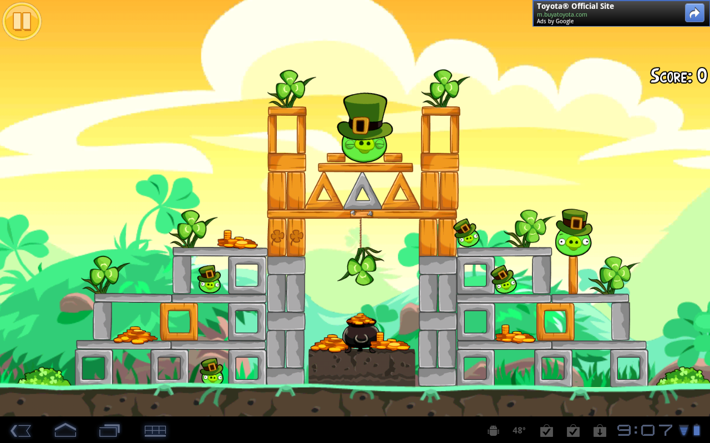
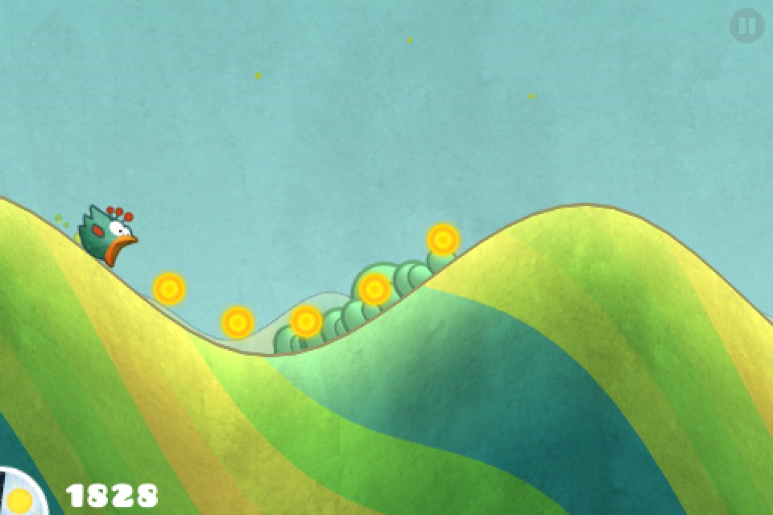
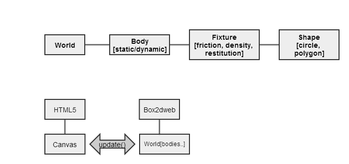
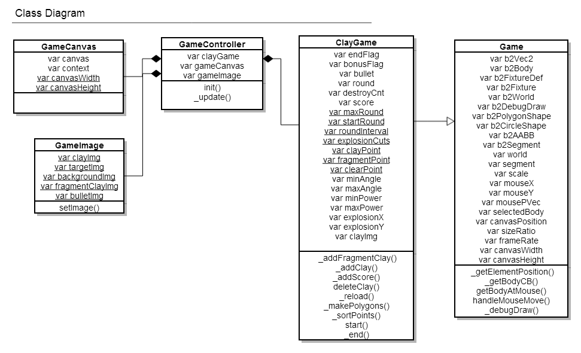
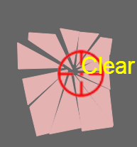
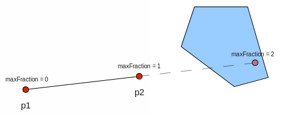
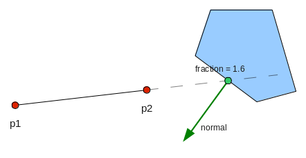
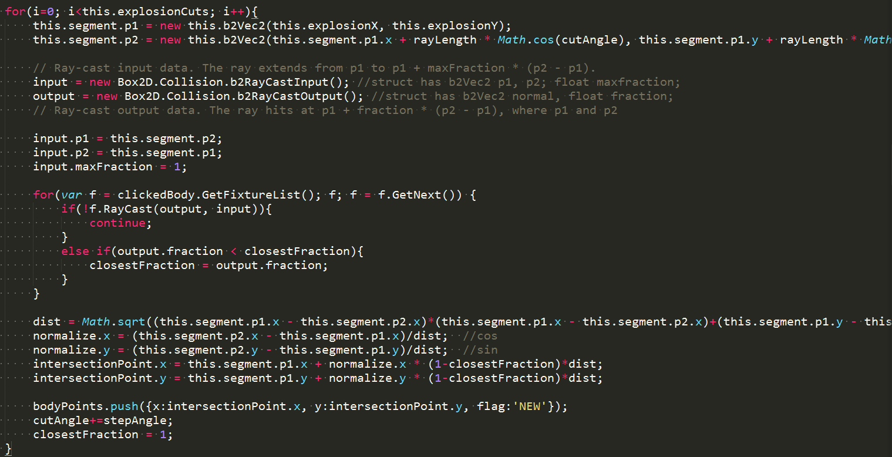
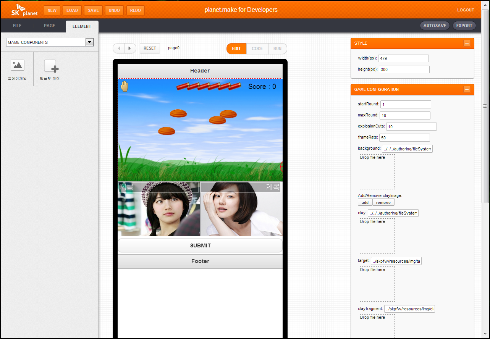

하계 인턴 개인과제 발표
CTO > Mobile Platform 개발본부 > Web기술개발팀
김성원 인턴사원
과제 소개
- HTML5 게임 제작
1주차 - Web 게임 조사
2주차 - HTML5 게임 개발
- 만든 게임을 저작 툴에 통합
3주차 - 저작 툴 통합
4주차 - Debugging and Customizing, Mobile Test
HTML5 Clay Game
게임 선정 배경
- Mobile&Web 환경에서 모두 할 수 있는 게임
- 전체 개발 기간 3주
- 그래픽 요소 적고 중독성 있는 게임
사용된 엔진 소개
- Box2d 물리 엔진, Erin Catto
- 오픈소스, 경량
- C++로 시작, 여러 언어 지원(Flash, Java, Js, Python)
- Angry bird, Tiny wings 등 여러 게임 제작 됨.
 
Architecture - 1

Architecture - 2

Debug
Exploding

- RayCast 임의의 광선을 쏴서 만나는 Fixture가 있는지 확인 하는 함수

Code

저작 툴(Planet.Make)
- 일반 사용자들도 쉽게 모바일 홈페이지를 구축할 수 있는
UI Tool
- Drag & Drop 방식
- Game Function을 객체화(클래스화) 후 통합
- 클레이 각도/속도, 라운드, 점수, 이미지, 캔버스 크기 등
커스터마이징 가능

Clay Game as a Event Game
개인과제를 통해
1. Web기술개발팀에서 진행되는 프로젝트에 대한
전반적인 이해
- Authoring Tool, javascript Research...
2. 팀 차기 계획이었던 HTML5게임을 미리 만듦으로써
팀에 대한 기여
3. javascript framework에 대한 이해, 개인적인 역량 향상
- Js Class, HTML5, Physics Engine, Git...
감사합니다
이 웹페이지는 Impressed.js를 이용해 만들어 졌습니다.